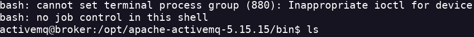

Broker
- Añado la dirección ip a mi lista de hosts nano /etc/hosts
- Realizo un nmap para ver los puertos abiertos en el host nmap -Pn -sV -sC -p- --open 10.10.11.243 -oN scan.txt
- Parece ser que puedo entrar por el servicio apachemq
- Encuentro el CVE-2023-46604 el cual se puede usar para obtener un RCE

- Para realizar la escalada de privilegios pruebo a ver donde tengo privilegios sudo -l
- Puedo usar nginx para arrancar un servidor como root
- Copio el archivo nginx.conf y lo pego en la carpeta /tmp
- Ejecuto en comando para arrancar con nginx sudo nginx -c /tmp/pwnd.conf
- Hago un curl como para una web solo que lo hago al servidor local al archivo root.txt curl 127.0.0.1:9001/root.txt